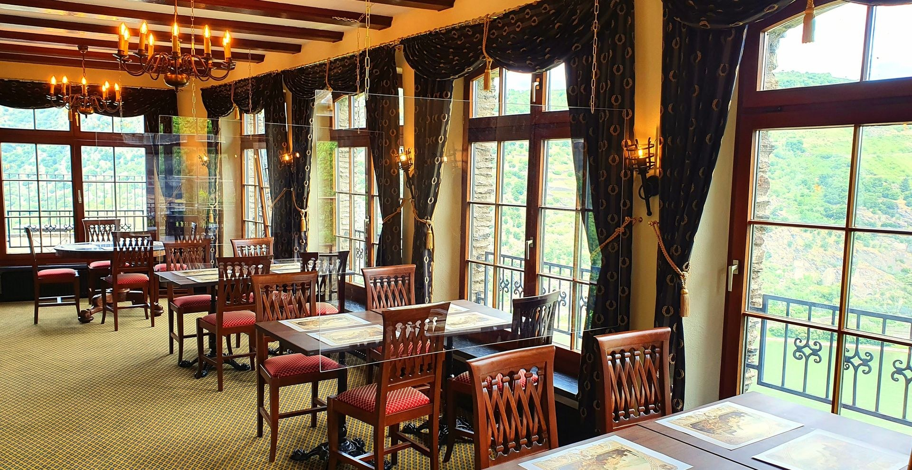
| 営業時間 | 毎日 12:00〜22:00（温かい料理 12:00〜16:30／17:30〜20:00） |
|---|---|
| 定休日 | なし（公式サイトの記載では毎日営業） |
| 住所 | Schönburg 1, 55430 Oberwesel |
| 予約 | 推奨 — ☎ +49 6744 93930 ／ 公式サイト |
| 乳児連れ | ベビーカー 未確認／ハイチェア 未確認／おむつ替え台 未確認（根拠） |
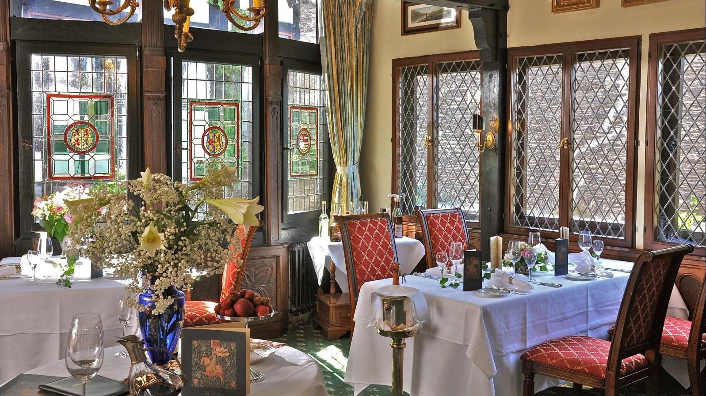
| 営業時間 | 水〜日 14:30〜23:00（料理 15:00〜21:00） |
|---|---|
| 定休日 | 月・火 |
| 住所 | Schönburg 1, 55430 Oberwesel |
| 予約 | 推奨 — ☎ +49 6744 93930 ／ 公式サイト |
| 乳児連れ | ベビーカー 未確認／ハイチェア 未確認／おむつ替え台 未確認（根拠） |
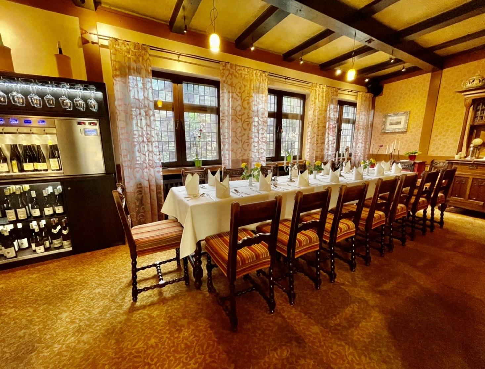
| 営業時間 | 12:00〜15:00／17:30〜21:00 |
|---|---|
| 定休日 | 水・木（料理・レストランとも休み） |
| 住所 | Marktplatz 4, 55430 Oberwesel |
| 予約 | 推奨 — ☎ +49 6744 7003 ／ 公式サイト |
| 乳児連れ | ベビーカー 未確認／ハイチェア 未確認／おむつ替え台 未確認（根拠） |
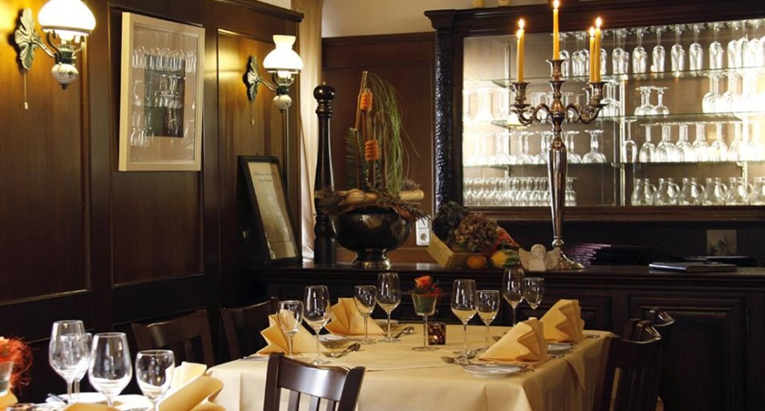
| 営業時間 | 火〜日 12:00〜14:00／17:00〜19:00（2026年3月6日〜12月27日の期間） |
|---|---|
| 定休日 | 月曜 |
| 住所 | Am Plan 1, 55430 Oberwesel |
| 予約 | 推奨 — ☎ +49 6744 93390 ／ 公式サイト |
| 乳児連れ | ベビーカー 未確認／ハイチェア あり／おむつ替え台 あり（根拠） |
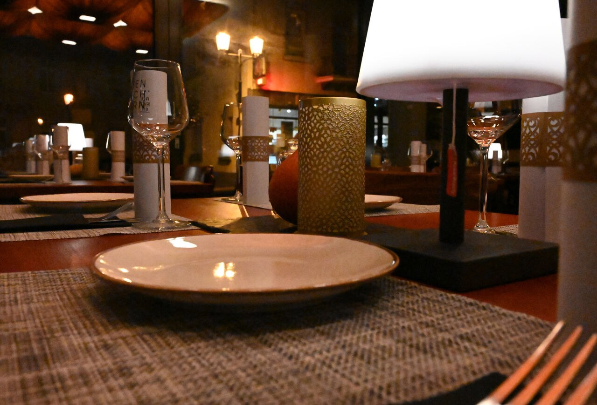
| 営業時間 | 水〜金 17:00〜22:00（料理〜21:00）／土 17:00〜22:00（観光ポータルでは 14:00〜）／日 12:00〜14:30・17:00〜21:00（料理） |
|---|---|
| 定休日 | 月・火 |
| 住所 | Rathausstr. 2（Hotel DAS WESEL 内）, 55430 Oberwesel |
| 予約 | 推奨 — ☎ +49 1523 5784008 ／ 公式サイト ／ 予約サイト |
| 乳児連れ | ベビーカー 未確認／ハイチェア 未確認／おむつ替え台 未確認（根拠） |
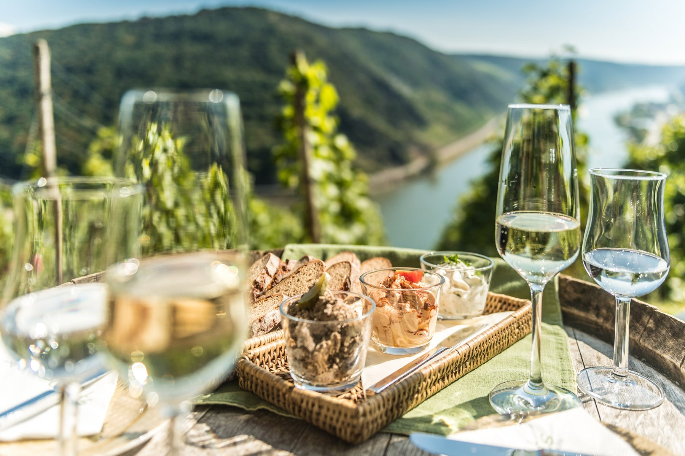
| 営業時間 | 水〜日 12:00〜18:00 |
|---|---|
| 定休日 | 月・火（冬季休業あり） |
| 住所 | Günderrodehaus 1（Siebenjungfrauenblick）, 55430 Oberwesel |
| 予約 | 可 — ☎ +49 6744 714011 ／ 公式サイト |
| 乳児連れ | ベビーカー 未確認／ハイチェア 未確認／おむつ替え台 未確認（根拠） |
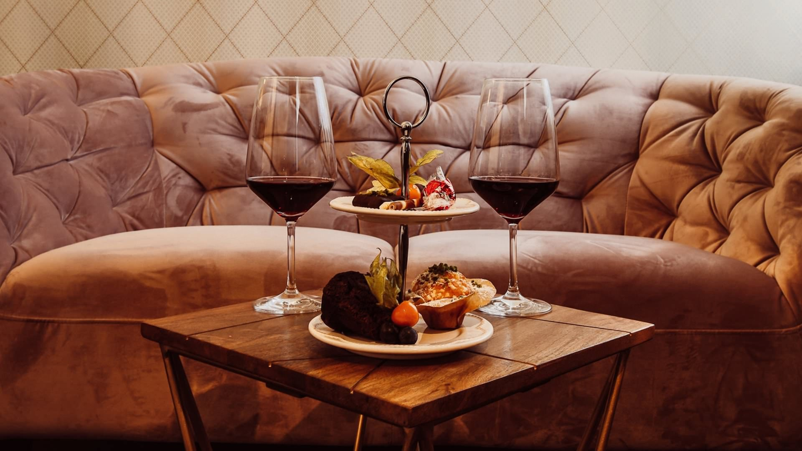
| 営業時間 | 火〜土 17:30〜（要予約） |
|---|---|
| 定休日 | 日・月（予約時のみ営業） |
| 住所 | Rheinhöhenstraße 43-45, 55430 Oberwesel-Dellhofen |
| 予約 | 要 — ☎ +49 6744 94319 ／ 公式サイト |
| 乳児連れ | ベビーカー 未確認／ハイチェア 未確認／おむつ替え台 未確認（根拠） |
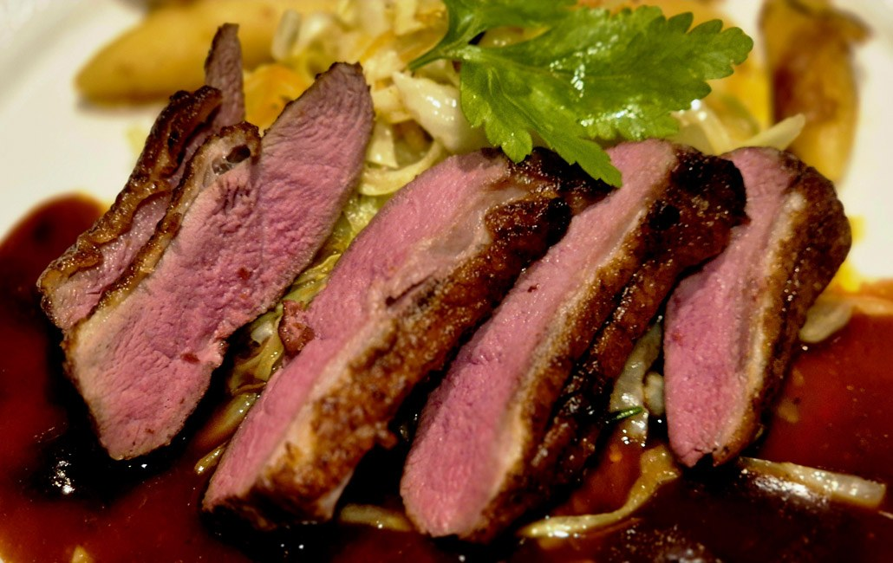
| 営業時間 | 毎日 18:00〜21:00（ディナー）／日・祝 12:00〜14:00（ランチ） |
|---|---|
| 定休日 | なし（公式表記上） |
| 住所 | Schloßberg 47, 56329 St. Goar |
| 予約 | 推奨 — ☎ +49 6741 8020 ／ 公式サイト |
| 乳児連れ | ベビーカー 未確認／ハイチェア 未確認／おむつ替え台 未確認 |
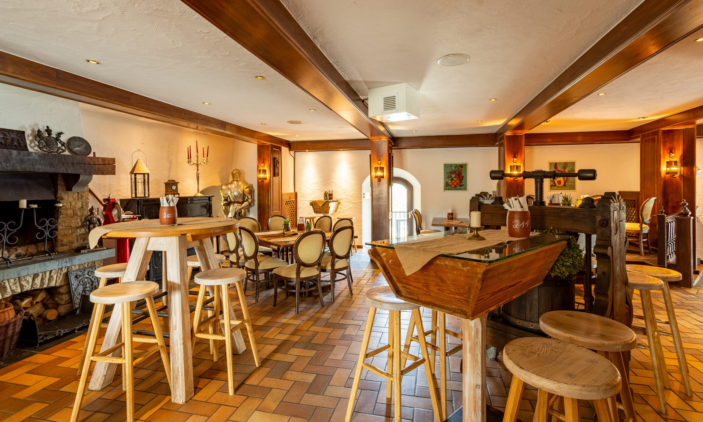
| 営業時間 | 公式に曜日別の記載なし（夏季テラス営業）。Google 表示は毎日 12:00〜20:00（要確認） |
|---|---|
| 定休日 | 要確認 |
| 住所 | Schloßberg 47, 56329 St. Goar |
| 予約 | 不可 — ☎ +49 6741 8020 ／ 公式サイト |
| 乳児連れ | ベビーカー 未確認／ハイチェア 未確認／おむつ替え台 未確認 |
| 営業時間 | 月〜金 11:30〜14:30／16:00〜22:00（料理 〜14:00・16:00〜20:00）、土・日祝 11:30〜22:00（料理 昼〜14:30または15:00・夜〜20:00） |
|---|---|
| 定休日 | 不定休（Flexibler Ruhetag） |
| 住所 | Oberstraße 38, 56329 St. Goar |
| 予約 | 推奨 — ☎ +49 6741 1515 ／ 公式サイト ／ 予約サイト |
| 乳児連れ | ベビーカー 未確認／ハイチェア あり／おむつ替え台 未確認（根拠） |
| 営業時間 | 毎日 11:30〜20:00（通し） |
|---|---|
| 定休日 | 5〜9月は不定休（要電話確認）／10〜4月は水・木休／冬季休業あり（2025-11-24〜2026-02-27の例） |
| 住所 | An der Loreley 24, 56329 St. Goar |
| 予約 | 要確認 — ☎ +49 6741 1691 ／ 公式サイト |
| 乳児連れ | ベビーカー 未確認／ハイチェア 未確認／おむつ替え台 未確認 |
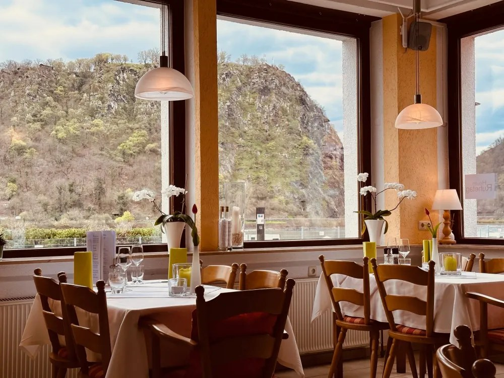
| 営業時間 | 公式に時間帯の記載なし（ホテルは通年営業） |
|---|---|
| 定休日 | 4/1〜10/31 は火・水休／11/1〜12/15 と 2/14〜3/31 は月〜木休／12/15〜2/14 冬季休業 |
| 住所 | An der Loreley 37, 56329 St. Goar |
| 予約 | 要確認 — ☎ +49 6741 324 ／ 公式サイト |
| 乳児連れ | ベビーカー 未確認／ハイチェア 未確認／おむつ替え台 未確認 |
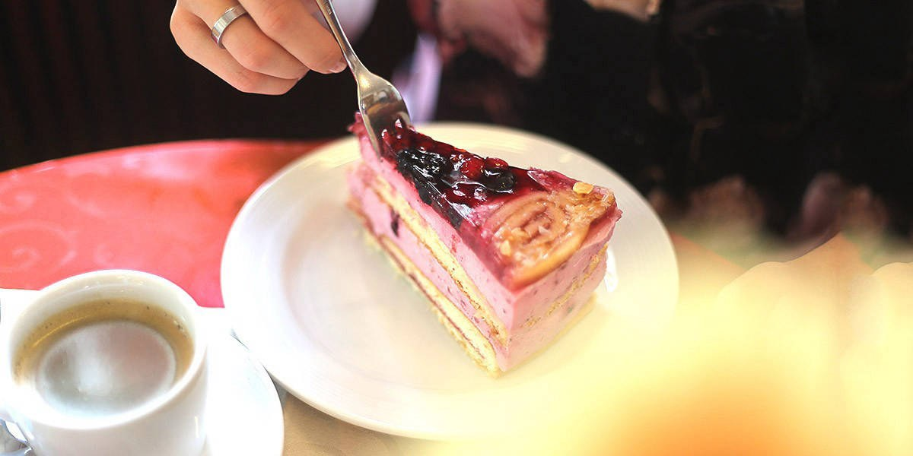
| 営業時間 | 火〜日 11:30〜（温かい料理 12:00〜21:00） |
|---|---|
| 定休日 | 月曜（ローゼンモンタークを除く） |
| 住所 | Rheinstraße 18, 56346 St. Goarshausen |
| 予約 | 可 — ☎ +49 6771 2601 ／ 公式サイト |
| 乳児連れ | ベビーカー 未確認／ハイチェア 未確認／おむつ替え台 未確認 |
| 営業時間 | イースター〜11/30：月・金 18:00〜23:00、土・日 12:30〜23:00 |
|---|---|
| 定休日 | 火・水・木（および12月〜イースター前の冬季） |
| 住所 | Oberstraße 61, 55422 Bacharach |
| 予約 | 推奨 — ☎ +49 6743 1209 ／ 公式サイト |
| 乳児連れ | ベビーカー 未確認／ハイチェア 未確認／おむつ替え台 未確認 |
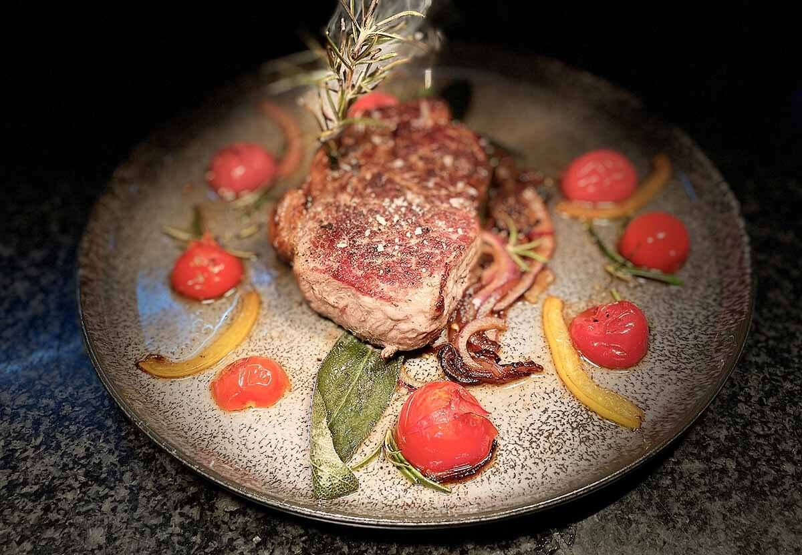
| 営業時間 | 火〜日 17:00〜21:00（最終メイン注文）※観光局一覧では日祝 12:00〜14:00 も営業・木曜は予約のみ |
|---|---|
| 定休日 | 月曜 |
| 住所 | Langstraße 50, 55422 Bacharach |
| 予約 | 推奨 — ☎ +49 6743 1243 ／ 公式サイト ／ 予約サイト |
| 乳児連れ | ベビーカー 未確認／ハイチェア 未確認／おむつ替え台 未確認 |
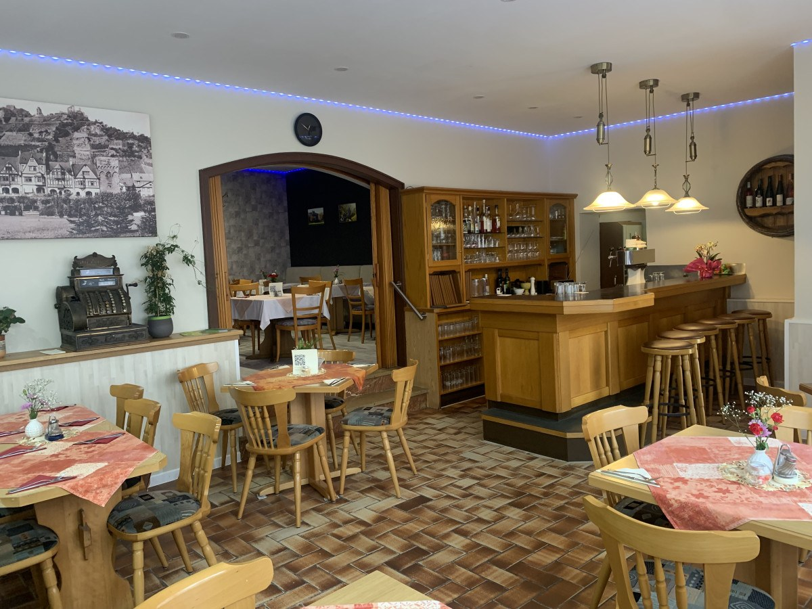
| 営業時間 | 4〜10月：月〜金 17:00〜21:00、土・日 12:00〜14:30／17:00〜21:00（料理 〜20:30） |
|---|---|
| 定休日 | 観光局一覧に定休日記載なし（Google 表示は火曜休・要確認） |
| 住所 | Marktstraße 3, 55422 Bacharach |
| 予約 | 要確認 — ☎ +49 6743 1492 ／ 公式サイト |
| 乳児連れ | ベビーカー 未確認／ハイチェア 未確認／おむつ替え台 未確認 |
| 営業時間 | 毎日 11:30〜22:00（料理 〜21:00） |
|---|---|
| 定休日 | なし（観光局一覧上） |
| 住所 | Oberstraße 45–49, 55422 Bacharach |
| 予約 | 要確認 — ☎ +49 6743 9478275 ／ 公式サイト |
| 乳児連れ | ベビーカー 未確認／ハイチェア 未確認／おむつ替え台 未確認 |
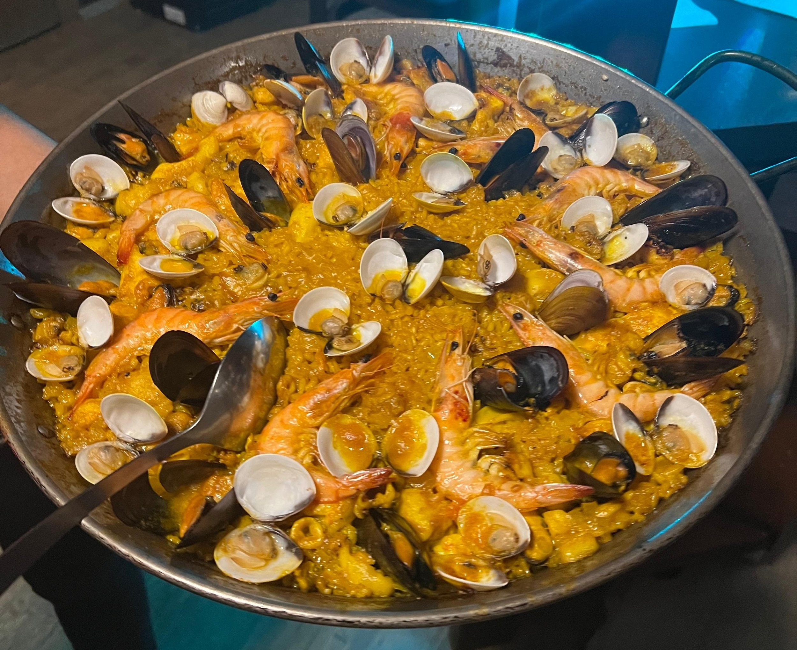
| 営業時間 | 月・水〜金 17:00〜21:30、土・日 12:00〜14:00／17:00〜21:30 |
|---|---|
| 定休日 | 火曜 |
| 住所 | Langstraße 18, 55422 Bacharach |
| 予約 | 可 — ☎ +49 6743 9090718 ／ 公式サイト |
| 乳児連れ | ベビーカー 未確認／ハイチェア 未確認／おむつ替え台 未確認 |
| 営業時間 | 4月から毎日 12:00〜22:00（観光局一覧） |
|---|---|
| 定休日 | 月曜 |
| 住所 | Blücherstraße 16, 55422 Bacharach |
| 予約 | 要確認 — ☎ +49 6743 947363 |
| 乳児連れ | ベビーカー 未確認／ハイチェア 未確認／おむつ替え台 未確認 |
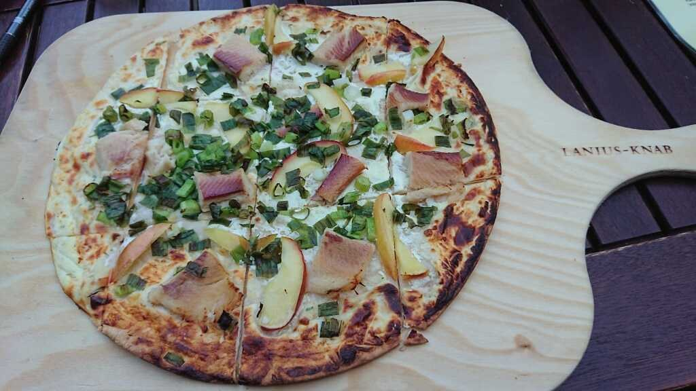
| 営業時間 | 夏季は毎日 12:00〜22:00（醸造所の厨房〜21:00・天候次第）。2026年の屋外シーズンは4月20日開始。例年5〜10月営業（5月の土日も営業） |
|---|---|
| 定休日 | 天候による臨時休業あり／冬季休業 |
| 住所 | Mainzer Straße 38, 55430 Oberwesel |
| 予約 | 推奨 — ☎ +49 6744 8104 ／ 公式サイト |
| 乳児連れ | ベビーカー 未確認／ハイチェア 未確認／おむつ替え台 未確認（根拠） |
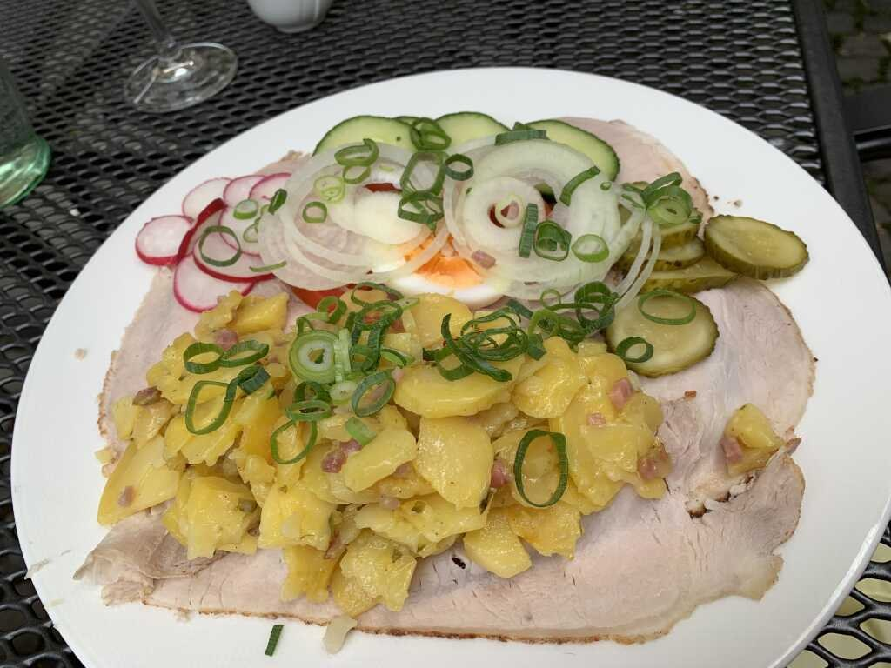
| 営業時間 | 木〜火 12:00〜22:00（料理〜21:00） |
|---|---|
| 定休日 | 水曜 |
| 住所 | Oberstraße 63, 55422 Bacharach |
| 予約 | 可 — ☎ +49 6743 1208 ／ 公式サイト |
| 乳児連れ | ベビーカー 未確認／ハイチェア 未確認／おむつ替え台 未確認（根拠） |
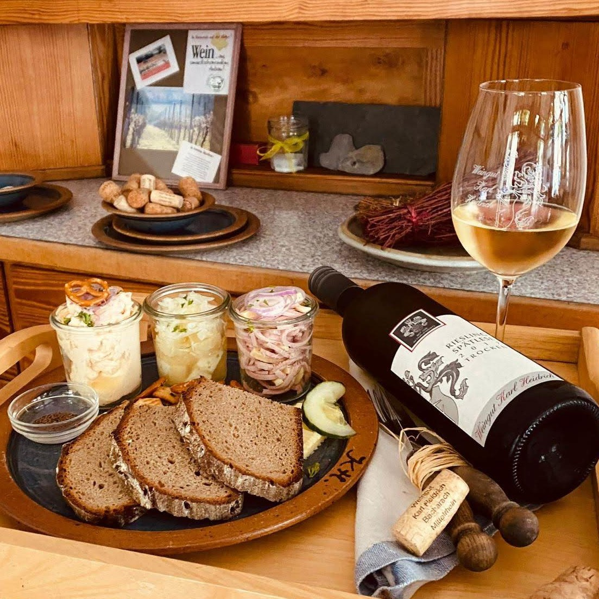
| 営業時間 | 火〜土 12:00〜22:00（料理 12:00〜19:00 ラストオーダー）。2026年の通常営業は10月31日まで。5月は土曜のみ営業（日曜は休み） |
|---|---|
| 定休日 | 日・月（冬季休業） |
| 住所 | Oberstraße 16-18, 55422 Bacharach |
| 予約 | 可 — ☎ +49 6743 93060 ／ 公式サイト |
| 乳児連れ | ベビーカー 可／ハイチェア 未確認／おむつ替え台 未確認（根拠） |
| 営業時間 | 火〜土 18:00〜22:00 |
|---|---|
| 定休日 | 日・月（5月の土日は土曜夜のみ） |
| 住所 | Oberstraße 72/74, 55422 Bacharach |
| 予約 | 可 — ☎ +49 6743 9090731 ／ 公式サイト |
| 乳児連れ | ベビーカー 未確認／ハイチェア 未確認／おむつ替え台 未確認 |
| 営業時間 | 毎日 6:00〜18:00（屋外席は10:00〜） |
|---|---|
| 定休日 | なし（公式表記上） |
| 住所 | Heerstraße 95, 56329 St. Goar |
| 予約 | 不要 — ☎ +49 6741 1635 ／ 公式サイト |
| 乳児連れ | ベビーカー 未確認／ハイチェア 未確認／おむつ替え台 未確認（根拠） |
| 営業時間 | 未確認（公式・観光局に記載なし） |
|---|---|
| 定休日 | 未確認（2018年時点の写真説明に『火曜休』の記載あり） |
| 住所 | Liebfrauenstraße 45–47, 55430 Oberwesel |
| 予約 | 可 — ☎ +49 6744 264 ／ 公式サイト |
| 乳児連れ | ベビーカー 未確認／ハイチェア あり／おむつ替え台 未確認（根拠） |
| 営業時間 | 月〜金 13:00〜19:00、土・日 11:00〜19:00 |
|---|---|
| 定休日 | なし（観光局一覧上。冬季は要確認） |
| 住所 | Oberstraße 48, 55422 Bacharach |
| 予約 | 不要 — ☎ +49 6743 1879 |
| 乳児連れ | ベビーカー 未確認／ハイチェア 未確認／おむつ替え台 未確認 |
| 営業時間 | 3/1〜10/31：月・水〜日 11:00〜18:00 |
|---|---|
| 定休日 | 火曜（11月〜翌3月は休業） |
| 住所 | Rathausstraße 9, 55430 Oberwesel |
| 予約 | 不要 |
| 乳児連れ | ベビーカー 未確認／ハイチェア 未確認／おむつ替え台 未確認 |
本ガイドは個人利用目的で作成。掲載情報は2026年9月時点の調査に基づく。写真出典: 各店の公式サイト・観光局（oberwesel.de／st-goar.de／bacharach.de／romantischer-rhein.de 等）・実食ブログの掲載写真（出典は各カードに明記）。地図: © OpenStreetMap contributors
{kind=link}
{kind=link}
{kind=link}
{kind=link}
{kind=link}
{kind=link}
{kind=link}
{kind=link}
{kind=link}
{kind=link}
{kind=link}
{kind=link}
{kind=link}
{kind=link}
{kind=link}
{kind=link}
{kind=link}